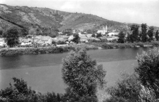

|
|
|
Weinbaugebiet
22 - Tokaj-Hegyalja |
Fläche:
5,246 Hektar - Aus klimatischer Sicht die kühlste
Weinbauregion von Ungarn. Es gehört schon
zur Weinbaukunst,
unter diesen klimatischen Verhältnissen noch akzeptable
Qualität zu erzeugen.
|
|
Nach
einer uralten Gesetzesregelung dürfen insgesamt 30 Ortschaften
in
Ungarn Tokajer
Wein produzieren. Diese Regelung wird auch heute noch angewendet,
obwohl einige dieser Ortschaften sich heute im Nachbarland Slowakei
befinden. Juristisch gesehen ist der Tokajer ein Ungarnwein.
Zum zentral gelegenen Kelterbetrieb in Tolcsva liefern auch die
Slowaken ihre Sauerweine. Wichtige Weinbausiedlungen sind
Mád,
Tarcal, Tállya, Rátka, Bodrogolaszi,
Bodrogkeresztúr, Tolcsva, Sárospatak und Tokaj.
Tokaj ist
ein ausschließlich Weißwein gebendes Weinbaugebiet.
Rechts
ein Bild von der Ortschaft Tokaj, von wo der berühmte Wein seinen Namen
hat. |
 |
Unter ganz anderen klimatischen Verhältnissen reifen die
Tokajer
Weine in Australien und Kalifornien heran. Wenn sie die
Bezeichnung Tokajer nicht mehr lange benutzen dürfen, ist es
aus
fachmännischer Sicht Schade für die
Qualität. Die Rebe
ist eine tropische Pflanze und die Trauben können von Natur
aus
nicht genug von der Sonne haben. So erfordert die Weinproduktion
in Tokaj vielmehr Kunst am Weinberg und fragwürdige
Aktivitäten bei der Kreation in den Weinkellern. - Natur
adé im Ungarnwein?
Die
schwerflüssigen
Weine mit hohem Säurengehalt entstanden
früher durch klassisch oxidative Gärung und Reifung,
in den letzten
Jahren gibt es immer mehr Tokajer Weine mit reduktivem Charakter im
Handel. Das hängt u.a. mit der neuartigen Weinproduktion zusammen - statt
Fässern nunmehr in Edelstahlkesseln. Das ermöglicht eine
schnellere Gärung und erspart die Unterhaltung von traditionellen
Weinkellern durch neue Weinspekulanten, die selbst keinen Weinbau
betreiben und kein Weinland haben - zumindest so lange, bis die
Eigentümer von Weinkellern nachrüsten. Langfrisiitg gehört ihnen
das Terrain weiterhin, weil die neue Methode extrem
Energieverschwendend und daher auch umweltschädlich ist.
In einem weltberühmten Weinbaugebiet lebt man nicht nur von
der Arbeit allein. Es werden laufend neue Legenden erfunden, die
den besonderen Wert des Tokajer Weines hervorheben sollen. So eine
ist die folgende Geschichte.
Nach
einer Legende bot der Priester Máté Sepsi
Lackó zu
Ostern im Jahre 1631
Zsuzsa Lórántfy den ersten Ausbruch in
Sátoraljaújhely an. Die
Weintraube kam von der Flur Orémus. Dieses Ereignis geschah
nach
neueren Forschungen, wenn überhaupt, dann mindestens einige
Jahrzehnte früher, aber
wichtiger ist, dass es in der Weinbauregion Hegyalja wahrscheinlich
schon
viel früher Ausbruchwein produziert wurde. So wird im Jahre
1590 in dem lateinisch-ungarischen Wörterbuch von
Balázs
Szikszai Fabricius
belegt, dass der
Ausdruck "Aszu" für "Ausbruchtraube" schon damals benutzt
wurde. Es
war schon damals ein gewisser "Hauptwein" gemacht,
der
wahrscheinlich mit
dem Ausbruchwein identisch ist.
|
Eine
Vorbedingung der Ausbruchsbildung ist die späte Weinlese. Bis
1700
begann man mit der Weinlese in der Woche von Gál (ungarischer Vorname mit
Namenstag am 10.
Oktober), dann pö à pö immer
später, heute ist der Stichtag der
Namenstag von Simon-Júda (28. Oktober).
Nach 1600
traten immer mehr Gesetzesregelungen in Kraf. Im Jahre 1655 hat sich
sogar das ungarische Parlament mit dem Ausbruchwein
beschäftigt - ein
Zeichen für den wirtschaftlichen Wert des Ausbruchweins (wo bitte soll das
gewesen sein im damals dreigeteilten Ungarn?). |
 |
Eine große Auswahl bester Tokajer
Weine bekommt man in Deutschland >>>
|
Die
Produktion von Ausbruchweinen hat ihren Höhepunkt zu Ende des
18.
Jahrhunderts und Anfang des 19. Jahrhunderts erreicht. Hunderte von
Fachschreiber haben sich mit dem Ausbruchwein aus chemischer und
gesundheitlicher Sicht beschäftigt. Lange Zeit meinten sie, in
ihm die
Herstellung von Gold entdeckt zu haben und die Weinbauer versuchten
länderübergreifend überall die Herstellung
von Ausbruchwein zu
intensivieren, doch die Konkurrenz (am bedeutendsten: Ruszt und
Ménes)
wurde von den Tokajer Weinbauern vom Markt gedrängt. Bis zur
Mitte
des 20. Jahrhunderts wurde in Tokaj-Hegyalja viel Koscherwein
für die
jüdischen Festtische produziert, heute erneut viel, besonders viel in der
Ortschaft Mád.
Nach der
Privatisierung in den 1990er Jahren haben sich zahlreiche
ausländische
Investoren in Tokaj-Hegyalja etabliert. Wegen des schnellen
Kapitalumlaufs und der Förderung des westlichen Weingeschmacks
führte
die neue Weintechnologie zu einem neuen
Ausbruchstil. Diese Weine legen den Ton vielmehr auf das aus den
Trauben stammende Primäraroma, sie sind leichter, weniger
oxidierend
als die Weine des früheren Weinstils.
|
|
Weinbauer,
-wirtschaften und
-händler dieses Weinbaugebietes:
|
- H-3915
Tarcal, Fő utca 94
- H-3908
Rátka,
Széchenyi tér 13
- H-3934
Tolcsva, Arany János
utca 31
- H-3909
Mád,
Bercsényi utca 5
- H-3881
Abaújszántó, Dobó István utca 6
- H-3915
Tarcal, Terézia kert 9
-
H-3917
Bodrogkisfalu, Klapka út 35
-
H-3909
Mád, Táncsics Mihály utca 29-31
- H-3934
Tolcsva, Arany János
utca 14
- H-3907
Tállya, Palota
- H-3909
Mád, Batthány
út 59
-
H-3950 Sárospatak, Bercsényi utca 27
- H-3934
Tolcsva, Petőfi Sándor utca 36-40
- H-3934 Tolcsva,
Bajcsy Zsilinszki út 45
- H-3934
Tolcsva, Táncsics Mihály út 3
-
H-3909
Mád, z.Zt. 27 Weinkeller der Ortschaft Mád
kostenlose
Anmeldung hier >>>
|
Weine aus dieser Region: |
- Der Tokajer Ausbruchwein macht diese Weinregion weltberühmt,
alle
anderen Weine aus Tokaj sind lediglich Mitläufer. Der
Ausbruchwein verdankt seinen Weltruhm einem
einzigartigen Herstellungsverfahren und einer weltweit hart durchgeführten
Marktstrategie mit unzähligen Klagen und Gerichtsverhandlungen rund um die Erde
um Herkunft und Namensgebung der Tokajer Weine. Das Herstellungsverfahren ist weitgehened an
die heimischen Rebsorten, vor allem an Furmint angepaßt. Bis 1990, als die
neuen
Investoren und Weinbaronen, wie die Axa Versicherung und Co. in Tokaj
erschienen, schmeckte der Tokajer Ausbruchwein Jahrhunderte lang
honigsüß und war etwas schwerfüssig, beinahe wie Speiseöle. Die
alkoholische Gärung wurde künstlich abgebrochen, damit der
Alkoholgehalt beim 6-bottrigem Ausbruchwein nicht über 16%
steigt.
Heute
schmeckt der
Ausbruchwein im Sinne der neuen Weinbaronen etwas bitterlich und im Geschmack erinnert er an den
Wermuthwein. Der Alkoholgehalt der neuzeitlichen Ausbruchweine der 6-bottich
Klasse beträgt nur noch 11-12%. Dies ist die Folge der Bevorzugung der von Botritis Cinerea
Pilzinfektion befallenen - de facto verfaulten - Weintrauben.
Lassen Sie sich nicht täuschen! Aus den vor 30-40 Jahren
produzierten Weinflaschen schmeckt der Ausbruchwein ganz
anders, als die neueren Ausbruchweine - früher besonders süß, schwerflüssig
und bereits der 3-bottrige Ausbruchwein einen Alkoholgehalt
von über 14% hatte. Es wird neulich behauptet, das liege daran,
dass der Ausbruchwein lange Lagerung für die Reife benötigt.
Diese Behauptung hinkt insofern, dass die 30-40 Jahre alten
Ausbruchweine anders produziert, damals noch selten und
mengenmäßig nicht so stark konzentriert aus den von Botritis
cinerea befallenen Weintrauben schon gleich nach der Gärung süß
und schwerflüssig waren und die 6-bottrigen Ausbruchweine
schon als Jungwein einen Alkoholgehalt von mindestens 16% hatten.
Fazit:
Die Ausbruchweine vor 30-40 Jahren waren als Jungwein nach
kürzester Reife vergleichbar mit dem
honigsüßen Eiswein. Die neuzeitlichen Ausbruchweine aus Tokaj
kann man nur noch mit dem Wermouthwein vergleichen.
- Die traditionell einheimischen Rebsorten
Furmint und Lindenblatt
(Hárslevelű) sind die Grundlage für die Herstellung von Szamorodni- und Ausbruchwein. Lindenblatt ist wahrscheinlich
autochton in Ungarn. Furmint wurde im späten Mittelalter aus Italien
eingebürgert und bildet die Grundlage für den Tokajer
Ausbruchwein. Im Weinbaugebiet
konnte man die Einbürgerung von Furmint durch
zugereiste Italiener im 14. Jahrhundert nachweisen. Das war
eine Übergangszeit in der ungarischen Geschichte, als das
Königshaus der Árpáden ohne Nachwuchs ausstarb und
vermeintliche Verwandte aus dem Hause Anjou in Italien sich
die ungarische Königskrone erschlichen. Die Ära der beiden
Anjoukönige wird heute als sehr fruchtbare Reformzeit
angesehen für das Bestehen und die Fortentwicklung von Ungarn.
Damals begann eine freundschftliche Beziehung zwischen Ungarn
und Polen, die bis zum Einfall der Türken in Ungarn im Jahre
1526 dauerte.
- Beim Szamorodni scheiden sich die
Geister. Es wird in der deutschsprachigen Literatur vielfach
behauptet, weil voneinander abgekupfert, das ungarische Wort
Szamorodni bedeute "wie gewachsen". Das stimmt aber überhaupt
nicht! Unter Szamorodni versteht kein Ungar etwas. Es gibt
das ungarische Wort Szomorodni, das täuschend ähnlich klingt,
bedeutet aber etwas ganz abwegiges (trauern). Szamorodni
entstammt in der Tat aus der Zusammenführung zweier slawischer
Begriffe: "unser" und "Heimat".
Szamorodni ist
ein Dessertwein in erster Linie aus der Rebsorte Furmint.
Hárslevelü (Lindenblatt) und neulich auch Zweigelt garantieren
die gewünschte Süße. Gesunde Schrumpftrauben und solche, die
bereits zur Fäulnis neigen und daher nicht für die
Weinherstellung geeignet sind, werden mit dem Motto Rette das
Schiff vor dem Untergang, zusammen zur Gärung
gebracht.
Szamorodni wird deutlich
kürzer gelagert in den
Fässern, als die wertvollere, bzw. teurere Ausbruchweine...
-
Der Grauburgunder ist unter unzähligen
verschidenen Namen bekannt ist, wie z.B. Ruländer in
Süddeutschland, Pinot Grigio in Italien. Der Grauburgunder
sorgt für bestimmte Säuren im Tokajer Wein - im Ausbruchwein
und auch im Szamorodni...
|
Cuvée ist ein Weinverschnitt,
gekeltert aus verschiedenen Rebsorten. Die großen
Weinkellereien bezeichnen Cuvée als
Kreation. Die nicht kommerziell
produzierenden Weinbauer, die mit der eigenen Hand direkt ihre
Weintrauben bis zum Endprodukt im Keller
bearbeiten, bezeichnen jedwede Laborarbeit
als Panscherei.
Solche
"Kreationen" wären im Tokajer Weinbaugebiet
normalerweise
nicht
erforderlich, hätten die neuen Weinbaronen, wie Axa
Versicherungen
und Co. nicht das abscheuliche Märchen über
den
besonderen
Geschmack nur (!) nach Verschimmelung der Weintraben und neulich sogar in von sog.
Edelschimmelpilzen durchflochtenen Weinkellern verbreitet.
In Tokaj soll der holzzellwandzerstörende Schimmelpilz Botritis
Cinerea aus den Trauben nützlich sein. Von dessen gesundheitsschädigender Wirkung
wurde bisher medizinisch wenig geforscht. Was die anderen Pilzgeflechte außerhalb der
hermetisch abgeschossenen Flaschen bewirken sollen, wissen wir
auch nicht, aber die neuen Weinbauspekulanten berichten über
eine besondere Athmosphära, von der die Tokajer Weine
profitieren sollen. Feucht sind solche Weinkeller allemal, außerhalb
und auch innerhalb der hermetisch isolierten Weinflaschen.
Auf weitere Legenden aus Tokaj warten wir gespannt, z.B.
mit dem berühmten Graf aus der Walachei, der mit dem
englischen Königshaus direkt verwandt sein soll. Andere
behaupten, der Knoblauchallergiker wäre ein Ungar gewesen. Drakula war einmal
tatsächlich in Budapest,
wohnte im östlichen, damals noch nicht eingemeindeten
Stadtteil Pest und das ist sogar belegt. Ob er unterwegs den Tokajer
Wein verkostete, wie einst der Sonnenkönig den damals noch
honigsüßen Tokajer Ausbruchwein?
|
Da in Tokaj nach der politischen Wende in auffallend großen Mengen auch
Pálinka (in Ungarn geschützte Bezeichnung für Schnaps) produziert wird, ein Hinweis dazu:
Törkölypálinka wird in ganz Ungarn schon
seit
Jahrhunderten hergestellt, nun wird er immer öfter mit der
scheinbar vornehmer klingenden italienischen Bezeichnung Grappa
vermarktet. Der Hinweis auf die staatliche oder sonstige Brenngenehmigung fehlt auf den meisten Branntweinflaschen der neuen Weinbarone
oder die
Genehmigung auf den meisten Etiketten mit einem solchen Stempelaufdruck
waren lange Zeit nur vorgetäuscht. Auf unsere ausdrückliche
Fragen nach
Brenngenehmigung bei Weinpräsentationen bekamen wir immer
wieder die
gleiche Antwort: "auch die Nachbarn brennen". So ging es bis vor kurzem, eine
neue Brennregelung musste her.
Alkoholbrennerei war seit Jahrhunderten ein Staatsmonopol in
Ungarn. Das Staatsmonopol ging bei der Privatisierung in den
1990er Jahren in die Hände neuer Schnapsbarone, die auch heute
noch aus dem Ausland das Geschehen im Tokajer Weinbaugebiet
bestimmen. Sie holte man damals ins Land, als das Kapital für die
Renovierung der in der Roten Ära verjubelten und so
heruntergewirtschafteten Weinkellereien fehlte. Nun werden diese
Eigentümer von manchen Politikern in Ungarn nicht mehr gerne
gesehen und die Geschichte wiederholt sich. Viktor Orbán hob das
frühere Brennmonopol auf und schwächte so die Macht ausländischer
Spekulanten.
So ähnlich verging es in Ungarn
auch mit nationalen Minderheiten, die man in früheren
Jahrhunderten massenhaft ins Land geholt hat, weil Fachkräfte und
zahlungskräftige Steuerzahler fehlten. Als sie etwas aufgebaut
haben, sorgte man schon für den Untergang solcher Minderheiten.
Das ging damals los, als die Ungarn über ihr Land nach langer
Besatzungszeit selbst bestimen
konnten nach dem zuerst verlorenen 1848/49er Kampf gegen die Habsburger
Besatzungsmacht. Ab 1867 wurden zuerst die Siebenbürger Sachsen und dann
auch die
Donauschwaben ihrer von ungarischen Königen zugesicherte
Autonomie beraubt. Ihnen wurden höhere Steuern auferlegt, als den
Ungarn im eigenen Land mit der Begründung, dass sie etwas mehr
haben, als die Ungarn. Vertreibungswellen folgten nach bekannten
Mustern, die nicht nur politisch motiviert waren.
Während der 133 Tage andauernden Roten Ära
im Jahre 1919 liquidierten die roten Machthaber
unzáhlige Bürger mit Bugoisie-Vorwürfen, darunter eine reihe von
deutschen Siedlungen, weil sie etwas hatten,
im Gegensatz zu den meist neulich zugewanderten
Machthaber. Diee Enteignung ging nach der erneuten Machtübernahme
durch die roten Barone im Jahre 1949 weiter. Nach der Vertreibung
der meisten der deutschstämmigen Bevölkerungsanteil ging es weiter
mit der Kollektivierung, oft in die eigene Tasche der Machthaber.
Unzählige Alleinstehende, von
denen der Staat etwas kollektivieren konnte, verschwanden spurlos. Solche
Güter wurden mit unzähligen politisch motivierten Argumenten
anderen zugebuttert. Besonders viele Ländereien wurden in der
Gegend kollektiviert und neuen Eigentümern geschenkt, wo heute die
ungarischen Diplomaten in den Budaer Bergen leben und sogar ganze
Weinbaugebiete wurden neuen Eigentümern
zugescharrt. So einen Grund fand auch der berühmte
13-Tages-Ministerpräsident von 1956 Imre Nagy für seine eigene
Bereicherung damals, als er ein Ministerium für Kollektivierung
leitete, das im Jahre 1953 unter Korruptionsvorwürfen aufgelöst
wurde. In so einem Weinbaugebiet lebt die
Familie von Viktor Orbán seit der Zeit, als viele Weinbauer von
dort vertrieben wurden. Die Vertreibung war zwar
rechtens, weil von den siegermächten angeordnet, die Beschlagnahme
der Eigentümeer der Vertriebenen entbehrt sich jedoch jeglicher
Grundlage nach internationalem Recht, genauso wie im Falle der Holocoustgeschädigter.
|
Touristik:
es gibt zahlreiche Wanderwege in diesem Weinbaugebiet, die eine
von Eichen-Buchen Laubwäldern dominierte Mittelgebirgslandschaft ist. Es sind die
südlichen Ausläufer der nahen Tatragerbirges.
Eine
taumhafte
Gelegenheit zur Erholung bietet ein Besuch der 22 km langen
Tropfsteinhöhle von Aggtelek oder des Thermalbades in
Liebhaber kulinarischer Köstlichkeiten kommen zurecht
beim |
| |
| |
|
Ungarn-Tourist Team

|
| |
| |
|